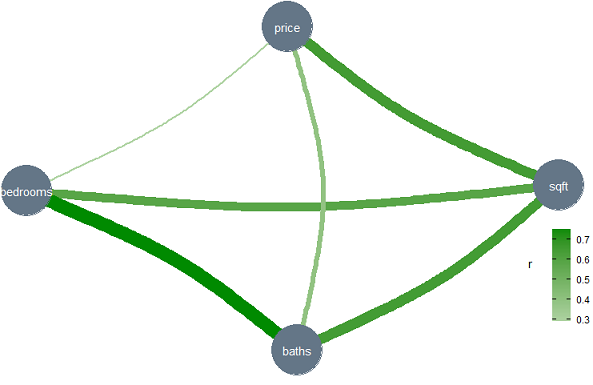
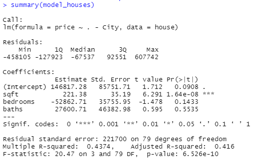

By Luiz Lucena | November 27, 2021
What it is and how to use Linear Regression on R
PT: Se você nunca ouviu falar sobre o tema, regressão linear é uma análise preditiva supervisionada usada para entender e explicar a relação entre uma variável dependente com variáveis independentes. Isso significa que é um modelo ou uma fórmula que explica o comportamento de uma variável Y dadas variáveis X que impactam a variável Y.
Digamos que queremos estudar o consumo de sorvete por dia em uma loja. Podemos usar o número de sorvetes comprados como nosso resultado, a variável dependente Y. Podemos usar o dia da semana, o clima e a temperatura para explicar esse consumo.
EN: If you never heard about it, a linear regression is a supervisioned predictive analysis used to understand and explain the relationship between a dependent variable with independent variables. This means that it is a model or a formula that explain the behaviour of a variable Y given variables X that impacts the variable Y.
Lets say that we want to study the consumption of ice cream given a day. We can use the number of ice creams cones bought as our result , the Dependent variable Y. We could use the day of the week, the weather and temperature to explain this consumption.
Ice Cream Model
PT: O modelo acima é uma regressão linear para explicar o número de casquinhas de sorvete vendidas Y em um dia, dadas as 3 variáveis independentes X1, X2 e X3 (dia da semana, clima e temperatura). Os A’s são parâmetros (inclinações) que controlam o impacto das Variáveis independentes X e serão encontrados em nosso modelo.
O clima e o dia da semana não são variáveis numéricas reais, então talvez tenhamos que trabalhar um pouco para transformá-los, falaremos sobre isso mais abaixo neste post.
EN: The model above is a linear regression to explain the number of Ice Cream Cones sold Y on a given day with 3 independent variables X1, X2 and X3 (Weekday, Weather and Temperature). The A’s are parameters (slopes) that controls the affect of the independent Variables X and they will be found on our model.
Weather and Weekday are not actual numericals variables so we might have to work a little bit to transform it but we will talk about it later on this post.
House price Dataset
PT: Vamos usar outros dados para entrar em mais detalhes. Os dados são de preços de residências de Rossmanchance , que contêm área, preço, cidade e números de quartos e banheiros de cada casa.
Usando a função Summary summary(house) no R, podemos verificar mais informações dos dados:
EN: Lets use another dataset to enter into details. The data we are going to use is a Housing prices dataset from Rossmanchance , that contais values area, price, city and numbers of bedrooms and bathrooms from each house.
Using a Summary function summary(house), we can see how the values are distribuited in the dataset:
house = read.table("http://www.rossmanchance.com/iscam2/data/housing.txt", header = T, sep = "\t")
summary(house)Summary of House pricing dataset
PT: Você pode ver acima a distribuição das variáveis na base de dados. Note que City é uma variável categórica (classificável e não continua) ao contrário das outras que são do tipo continuas. Por enquanto, vamos apenas utilizar as variaveis contínuas.
Criando um gráfico com os dados da base com exceção de Cidade, podemos ver uma tendência de aumento de valores com a variação dos metros quadrados das casas:
EN: You can see the distribution of variables in the database above. Note that City is a categorical variable (classifiable and non-continuous) unlike the others that are continuous. For now, let’s just use continuous variables.
Plotting a chart with the base data except City, we can see a trend when increasing price values with the variation of square meters:
gg3 <- ggplot(house, aes(x=sqft, y=price)) +
geom_point(aes(col=bedrooms, size=baths)) +
geom_smooth(method="lm", se=F) +
labs(subtitle="House prices per Squarefoor area, n of baths and bedrooms",
y="Price", x="Square Foot", title="Scatterplot", caption = "Source: house")
plot(gg3)House dataset plot
PT: A linha azul no gráfico acima já é um modelo linear usando Pé quadrado apenas e você pode ver uma correlação entre Pé quadrado e preço da casa. Vamos analisar essas correlações primeiro.
Construindo um gráfico de Correlação Pearson como o gráfico abaixo, você pode ver as correlações entre as variáveis. Quanto masis largas as linhas que conectam as variáveis, mais forte são suas correlações, o que significa que elas se relacionam entre si. Você pode ver uma forte correlação entre a variável sqft e preço mas não o mesmo comportamento entre preço e quartos / banheiro.
EN: The blue line on the graph above is already a linear model using Square foot only and you can see a correlation between Square foot and House price. Lets analyze those correlations first.
Plotting a Pearson correlation graph like the one below, you can see the correlations between variables. As larger the lines connecting variables , stronger their correlation, meaning that they relate to each other. You can see a strong correlation between the variable sqft and price, but not the same behavior between price and bedrooms/bath.
house %>%
correlation(method = "pearson") %>%
plot()
# The Model
model_houses <- lm(formula = price ~ . - City,data = house)PT: O código acima é o que necessitamos para criar nosso modelo. Vamos criar um modelo linear, com a variável price como resultado e utilizando todas as variáveis da base com exceção de City, que é categórica.
Podemos utilizar a função summary(model_houses) para entender mais detalhes deste modelo:
EN: The code above is what we need to create our model. We are creating a linear model, with the variable price as result and using all the variables in the base with except City, which is categorical.
We can use the function summary(model_houses) to understand more details of this model:
 # To Continue.,..